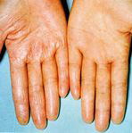

きぐすり.com は、漢方薬、女性の健康、サプリメント、ハーブの情報を専門家がやさしく解説しています。
病気の悩みを漢方で
ご質問に対するご回答
「主婦湿疹」は、漢方で良くなりますか？
もちろん十分、主婦湿疹（進行性指掌角皮症）は治療できます。
水仕事の多い家庭の主婦が多くかかりやすく、また男性でも調理師などに多くこの症状が見られます。女性は手足の末端の冷え症が多く、掌の角質層が破壊されやすく、又冷えのため、その(角質）回復が非常にしにくくなっています。

手・指の掌側が、
角質層の肥厚・皮膚剥離・痒み・皮膚亀裂があって、水やお湯にしみて痛みを感じることがある。
漢方では、指掌部の角質の新生を活性化させるトウキ・シャクヤク・センキュウ・ケイヒの補血・理気薬を使います。皮膚内部は血液を循環させ、皮膚表面は保湿して患部の乾燥状態を改善します。
外用薬では、皮膚再生を目的とした漢方薬独自の軟膏・クリームがあります。
また、以上のような漢方薬によるメディケアも大事ですが、自分自身のケアであるセルフケアも同じように大事です。
1）中性洗剤を石鹸にかえる。
2）洗剤には直接触れないこと。
3）過度に手を洗わないこと。
4）良くなっても、保湿に注意してしましょう。
5）生活を規則正しくして、皮膚を含む免疫力の低下をふせぎましょう。
皮膚病はみなさん、内科系の病気とちがって軽く考えかちです。非常に危険です。真剣に取り組んで治しましょう。